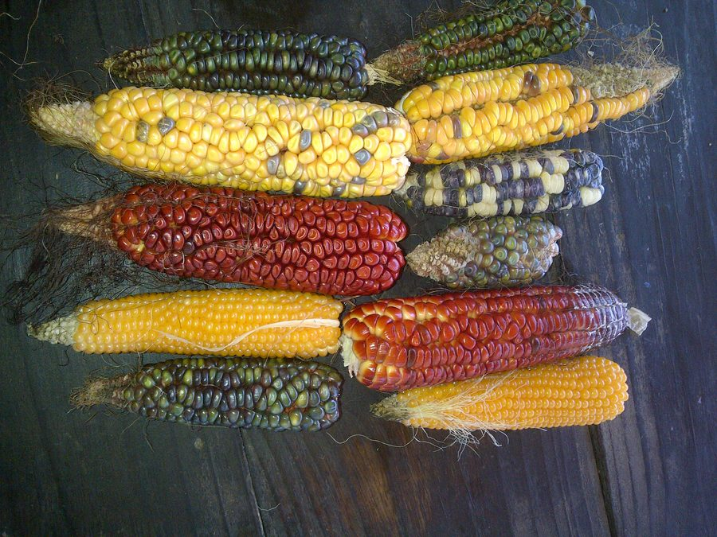
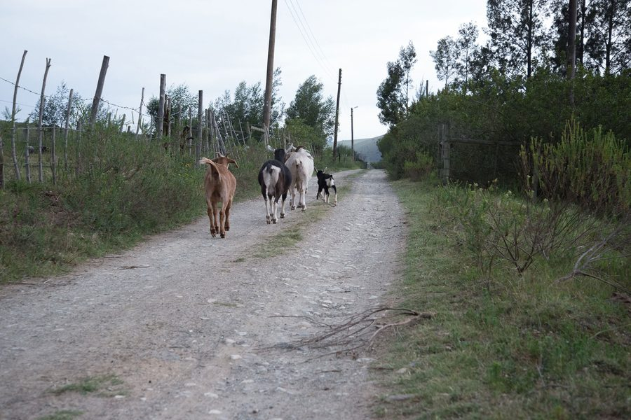
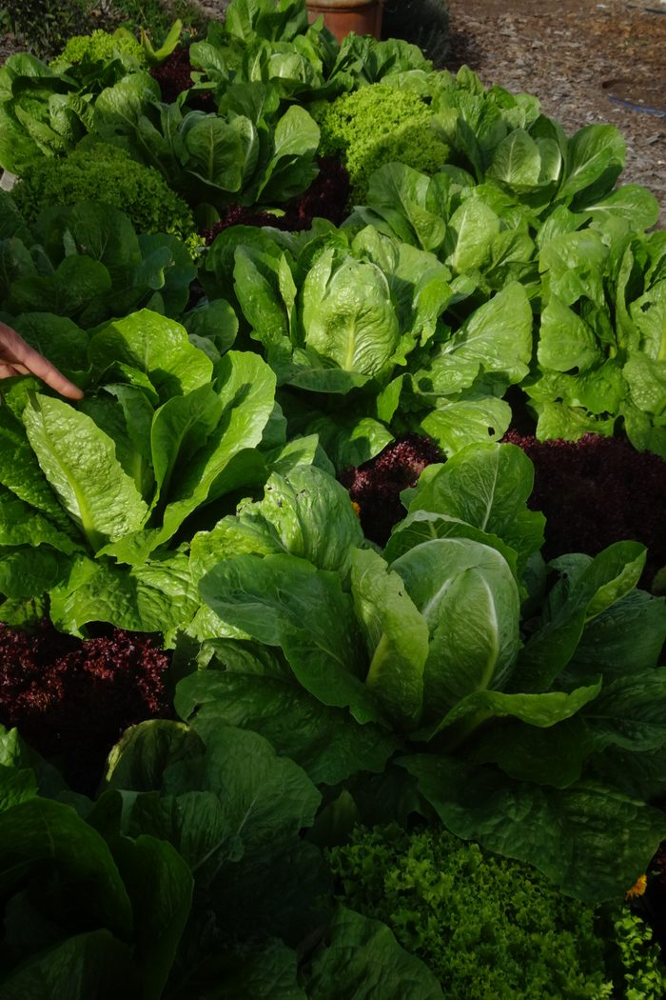

Shared Vision
Members share a common goal based on a shared need, and collectively embrace the principles of PGS and organic agriculture.
We are a locally focused quality assurance group. Members assess one another against the SAOSO organic standard, on each other’s farms, in the open — built on trust, social networks and knowledge exchange, not a distant inspector.
A PGS is defined by IFOAM-Organics International as a locally focused quality assurance system.
Member group
The standard we assess against
The PGS way of working
Farmer & consumer membership
A Participatory Guarantee System is not an inspection regime. It is a group of peers who hold each other to a shared standard. These six elements are what make it a PGS rather than a certificate bought from an agency.
Members share a common goal based on a shared need, and collectively embrace the principles of PGS and organic agriculture.
An integrity-based approach. Trust and integrity form the ethical basis of the system, verified through transparency.
A flat, equitable organisational structure, developed and managed by peers rather than a top-heavy management. All are responsible.
The system is open to public, stakeholder and peer scrutiny at all levels. Meeting agendas and standard reviews are accessible.
Members participate in developing and managing the process and procedures the group owns, controls and determines collectively.
Assessments and site visits focus on skills and knowledge exchange — traditional knowledge and innovation, soil, climate and market.
“Participatory Guarantee Systems are locally focused quality assurance systems. They certify producers based on active participation of stakeholders and are built on a foundation of trust, social networks and knowledge exchange.”
— IFOAM–Organics International, quoted in the SA Organic Certification Landscape
Every prospective farmer and producer member follows the same path, in the same order. It is set out in the group’s Principles, Policies and Procedures.
Approach the group as a prospective farmer or producer member.
Sign the farmer member pledge. A recorded verbal pledge is accepted where reading is a barrier.
Supply the group with the information it needs to assess your operation.
Familiarise yourself with the Basic Production Principles and the SAOSO standard.
A peer assessment team visits the farm and works through the assessment.
The committee reviews the findings and records a decision.
From the member farms
Every farm in the group is visited by peers. These are the crops, animals and seed that the visits are about — photographed on member farms in the Outeniqua.



Photographs are from member farms. farm attribution & consent to confirm
Fees are set on a cost-recovery basis and approved by the members at the annual general meeting. The assessment fee reflects the scale and commercial intensity of the farm.
Turnover is self-declared and subject to peer review. You tell us the band you fall in; we do not estimate it for you. If you are uncertain, ask the administrator and the group will work it out with you before the visit.
Fees are payable before the farm assessment visit, per the group’s procedures.
| Annual Turnover | Initial | Renewal |
|---|---|---|
| Below R250 000 | 1 500 | 900 |
| R250 001 – R500 000 | 2 500 | 2 000 |
| R500 001 – R1 000 000 | 3 000 | 2 500 |
| R1 000 001 – R2 500 000 | 3 700 | 3 200 |
| R2 500 001 – R5 000 000 | 5 000 | 5 000 |
| Above R5 000 000 | 8 000 | 8 000 |
Fees are per farm assessment visit. Transport for the administrator is charged separately at the AA rate; visits are clustered geographically wherever possible to reduce that cost.
The standard, our own procedures, the Basic Production Principles, the certification landscape and the blank checklists. No Drive links, no permission requests — stable addresses you can bookmark and cite.
The standard we assess against · 2026
How our own PGS is governed
Growing the organic sector in South Africa
Seals and recognition in the SA organic sector
What to have ready before the visit
Blank participant checklist
Blank participant checklist
Blank participant checklist
Ask a question about the standard, our procedures or the certification landscape. Answers are drawn only from the documents above, and every answer cites the passage it came from. If the documents do not cover your question, we will say so rather than guess.
Annual farmer and consumer membership is R100. On top of that, the group pays an annual PGS South Africa membership fee of R500, which is funded from the membership fees collected.
I could not find this in the documents this group publishes. I can answer from the SAOSO Organic Standard, our Principles, Policies and Procedures, the Basic Production Principles, and the SA Organic Certification Landscape — and none of them covers EU market access. Please ask the administrator.
The people and farms listed here are members of the Outeniqua Natural and Organic PGS group. Membership of the group is not a certification, and does not by itself mean that a farm is certified organic. A certification decision is a separate judgement made by the group’s certification committee against the SAOSO standard, and is recorded as such. Please do not read this list as a claim about any farm’s organic status.
The member list is being prepared for publication. names & consent — MAP 2